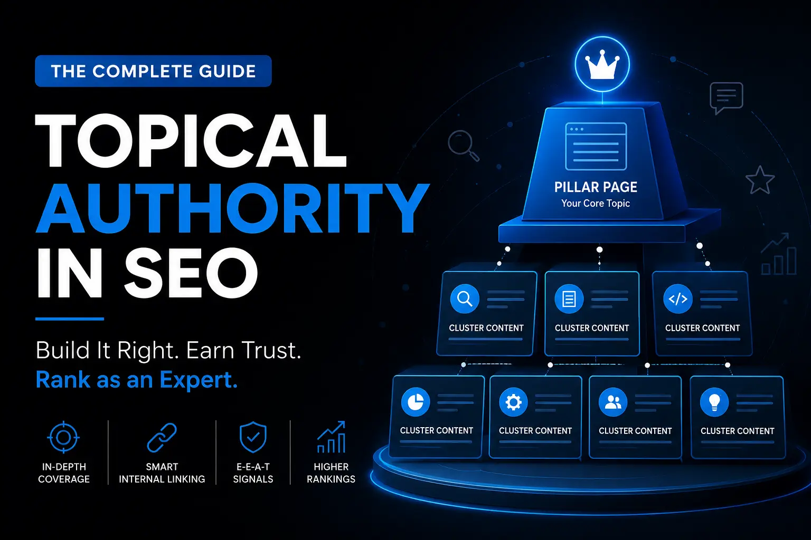

Understand what topical authority is, why it matters more than ever in 2026, and how to build it step by step using topic clusters, pillar pages, and smart internal linking.

Most websites publish blog posts and wonder why they never seem to rank. The traffic stays flat. New articles get ignored. Competitors keep outranking them even without noticeably better content. The problem, more often than not, comes down to one missing ingredient: topical authority.
If you want Google to treat your website as a trusted source in your niche, you need to go beyond writing individual articles. You need to show search engines that your site genuinely covers a subject in depth, that your content connects logically, and that readers consistently find what they need when they land on your pages. That is what topical authority is about, and this guide breaks it all down in a way that actually makes sense to implement.
Topical authority refers to the level of trust and expertise Google assigns to a website for a specific subject or niche. When your site comprehensively covers a topic through well-structured, interlinked content, search engines begin to see you as a go-to resource in that area. Over time, that perceived expertise translates into better rankings, more featured snippet placements, and stronger visibility in AI Overviews.
Think of it this way. If a single doctor writes a book on heart disease, that is useful. But if a medical institution publishes hundreds of detailed, well-organized, expert-reviewed articles on every aspect of cardiology, from prevention to surgery to recovery, that institution naturally becomes the authoritative source. Search engines work similarly. The more thoroughly your site covers a topic, and the more logically that content connects, the more Google trusts your domain for that subject.
Topical authority is not just about quantity. Publishing 200 thin, loosely related articles will not get you there. It is about depth, relevance, and structure. Every piece of content on your site should contribute to a coherent knowledge base that serves the reader completely.
Google has made significant updates in how it evaluates content quality. The Helpful Content system, entity-based search, and the rise of AI Overviews have all shifted the playing field. Random blog posts written for keywords alone rarely hold their rankings anymore. What Google rewards is websites that demonstrate genuine topical coverage and information gain.
AI Overviews, which now appear at the top of many search results, pull information from sources that Google considers authoritative and well-structured. Websites with strong topical authority are far more likely to be cited in these AI-generated summaries, which means their content gets exposure even when a user does not click through to the site. Building topical authority is now about more than just blue link rankings. It is about becoming the source that both Google and AI models trust.
Semantic search has also matured. Google no longer matches keywords mechanically. It understands entities, relationships between concepts, and user intent at a nuanced level. A website that covers SEO only through scattered keyword-stuffed articles signals shallow expertise. A website that covers keyword research, search intent, content strategy, internal linking, technical SEO, and topical authority in an organized, interconnected way signals genuine command of the subject.
To better understand how Google evaluates topics, entities, context, and relationships between concepts, read our guide on Semantic SEO.
A website that applies semantic SEO principles consistently is far more likely to demonstrate expertise and build long-term topical authority than one that focuses only on individual keywords.
For smaller websites and newer blogs, this is actually good news. You can compete with large sites not by having more backlinks but by being more thorough and more organized within your chosen niche.
Google's understanding of topical expertise draws from several overlapping signals. E-E-A-T, which stands for Experience, Expertise, Authoritativeness, and Trustworthiness, is the guiding framework. While E-E-A-T is not a direct ranking factor in isolation, it describes the quality signals Google's systems are trained to reward.
When Google crawls your website, it evaluates more than individual pages. It looks at the site as a whole. Do the pages connect to each other logically? Does the content cover a topic from multiple useful angles? Are there gaps where important sub-topics are missing? Does the site demonstrate real knowledge, or does it repeat surface-level information that exists on thousands of other pages?
Entity understanding plays a big role here. Google's Knowledge Graph organizes the world into entities and their relationships. When your content discusses people, places, concepts, products, and processes in accurate, well-structured ways, Google can map your content to these entities and understand what your site is really about. Using related terms and semantically connected concepts naturally throughout your writing helps Google build that picture correctly.
Google also evaluates information gain. This means content that adds something new, whether that is original analysis, a clearer explanation, a practical example, or a perspective not covered elsewhere, performs better than content that simply rephrases what already ranks. Your goal is not to copy the structure of the top-ranking pages. It is to be genuinely more useful.
These two terms get confused often, and the distinction matters for how you approach your SEO strategy.
Domain Authority is a third-party metric developed by tools like Moz, Ahrefs, and Semrush. It is a score from 0 to 100 that estimates how likely a domain is to rank based on the quality and quantity of backlinks pointing to it. Google does not use Domain Authority as a ranking signal directly, but backlinks and site credibility are real factors in how Google evaluates a site.
Topical authority is different. It is earned through content, not links. A new website with zero backlinks can build strong topical authority in a narrow niche by covering that subject thoroughly and structuring content intelligently. A high Domain Authority site with scattered, unfocused content may rank for branded terms but struggle to dominate a niche against a more focused competitor.
| Aspect | Topical Authority | Domain Authority |
|---|---|---|
| What it measures | Depth & breadth of content on a topic | Overall website strength based on backlinks |
| Built by | Creating comprehensive, relevant content | Earning backlinks from other websites |
| Controlled by | You (through your content strategy) | Partially (link-building takes effort & time) |
| Impact area | Ranking for a specific niche or topic | General ranking potential across all topics |
| How Google sees it | Expertise, authoritativeness, trustworthiness | Site credibility signal |
| Newer sites can win? | Yes, with the right content strategy | Very difficult without significant link building |
| Metric tool | Not a single number; evaluated holistically | Scored 0–100 by Moz, Ahrefs, Semrush |
The practical takeaway is this: if you are a newer or smaller website, focusing on topical authority is one of the most effective strategies available to you. You cannot build Domain Authority overnight, but you can build topical depth through consistent, well-planned content creation.
Topic clusters are a content organization model where one comprehensive pillar page covers a broad subject at a high level, and multiple supporting cluster articles cover specific sub-topics in depth. All the cluster pages link back to the pillar, and the pillar links out to each cluster. This interconnected structure signals to Google that your site covers the full breadth of a topic.
Imagine a website focused on SEO. The main topic cluster might look like this:
Each of these cluster pages goes deep into its specific topic. Together, they form a content hub that tells Google: this website knows SEO thoroughly, from strategy to execution. That is topical authority in action.
The cluster model also improves user experience. A visitor reading about internal linking might naturally want to learn about content strategy next. If those pages are connected clearly, the reader stays on your site longer, which sends positive engagement signals back to Google. If you want to understand how internal links specifically support this structure, this guide on internal linking strategy covers the mechanics in detail.
Internal linking is the connective tissue of topical authority. Writing great content is only half the job. If your pages exist in isolation, Google cannot fully understand how they relate to each other or how comprehensive your coverage is.
When you link from a cluster article to its pillar page, and from the pillar to the cluster, you are creating a clear semantic relationship between those pages. Google's crawlers follow those links and build a picture of your site's structure. Strong internal linking helps Google understand which pages are most important, what topics are related, and how deep your expertise runs.
Good internal linking also passes what SEOs call link equity or PageRank. When a strong page on your site links to a newer or weaker page, some of that authority transfers. This helps newer content get indexed and ranked faster.
Practically, every time you publish a new article, go back and add links to it from existing relevant pages. Do not wait for it to rank on its own. Proactively connecting it to your existing content cluster speeds up the process significantly. A well-thought-out internal linking strategy is often the difference between a content cluster that performs and one that stagnates.
Building topical authority is a methodical process. It does not happen by accident, and it does not happen quickly. But if you follow a clear approach, you will see results that compound over time.
The first step is picking a focused niche and refusing to drift outside it. A website that covers SEO, cooking, travel, and personal finance confuses search engines. One that covers only SEO and goes deep can build genuine topical authority. Narrower is almost always better when starting out.
Before writing a single article, map out every sub-topic your niche contains. Use tools like Ahrefs, Semrush, or Google's own People Also Ask results to find what your audience is searching for. Low-competition keyword research is especially valuable here because it lets you find gaps that larger sites have not fully covered yet.
Start with comprehensive pillar pages for your main topic areas. These do not need to be exhaustive in every detail, but they should give readers a strong overview and serve as a hub for all the related content you will create. Pillar pages typically rank for broader, higher-volume terms over time.
For each pillar topic, create supporting cluster articles that address specific questions, sub-topics, and search intents. Each cluster article should link naturally to the pillar and to other relevant cluster pages. Understanding search intent for each piece of content is critical here. A page targeting an informational query should be structured very differently from one targeting a transactional or navigational query.
As you publish each new piece, go back and add internal links from existing content. Create a natural web of connections. The goal is that any visitor who lands on your site can follow internal links to get their full question answered without ever leaving.
Topical authority is never finished. Search trends shift, new questions emerge, and competitors publish new content. Regularly audit your content to find topics you have missed and pages that need updating. Fresh, accurate content is a strong helpful content signal. A solid SEO blogging strategy will help you maintain a consistent publishing rhythm while ensuring each new piece contributes to your overall topical coverage rather than diluting it.
A topical map is a visual or documented outline of every topic and sub-topic your website plans to cover. Think of it as your content blueprint. Before you write a single word, your topical map tells you exactly what needs to exist on your site to achieve full coverage.
A simple topical map for an SEO website might start at the broadest level with SEO as the root topic, then branch into major categories like Technical SEO, On-Page SEO, Off-Page SEO, and Content Strategy. Each of those branches further into specific sub-topics and individual article ideas.
The value of a topical map is that it prevents random content creation. Without one, most websites publish whatever comes to mind, which results in patchy coverage with large gaps. With one, every article you write fits into a planned structure, and your topical authority grows deliberately with each new piece.
Your topical map also helps identify which cluster is most worth prioritizing first. Start with the sub-topic area where you can realistically achieve coverage quickly, build authority there, then expand. If you are also thinking about the broader structure of your blog and how each section fits together, reading about a complete SEO blogging strategy will give you helpful context.
Let us make this concrete. Suppose you run a blog focused entirely on SEO. Here is what a well-built topical cluster for the SEO Content Writing sub-topic might look like:
Each of these articles addresses a specific question or sub-topic. They all link to the pillar page, and the pillar links to each of them. A visitor reading about writing for featured snippets might naturally follow a link to the article on content length, then to the one on keyword usage. This kind of guided journey keeps people on your site and tells Google your content cluster is genuinely serving reader needs.
For the best results, pair this structure with strong on-page SEO fundamentals on every page. A well-structured content cluster with weak on-page optimization will underperform. Both elements need to work together.
Even with the right intentions, many websites make avoidable errors that slow down their topical authority growth.
A lifestyle blog that covers recipes, fitness, SEO tips, travel recommendations, and book reviews is not building topical authority in any area. It is spreading thin across too many niches. Pick one, go deep, then consider whether expansion makes sense later.
Creating twenty short 400-word articles to fill out a content cluster is not the same as building authority. Thin content provides little information gain and often targets the same search intent as better-performing pages. Each piece needs to offer genuine value.
Publishing new articles without linking them to existing content is one of the most common mistakes. Isolated pages take much longer to get indexed and ranked. Every new article should be connected to the cluster it belongs to from day one.
Many beginners focus entirely on high-traffic keywords and ignore the long-tail, specific questions that make up complete topical coverage. But it is often the cluster of long-tail articles that establishes your expertise, and their collective traffic can easily exceed one high-competition target.
Topical authority efforts are wasted if Google cannot crawl, index, and understand your site properly. Issues like broken links, duplicate content, and poor site speed undermine everything built on top. Getting technical SEO basics right is a prerequisite, not an afterthought.
Use this as a practical reference when building or auditing your content strategy:
| ✓ | Pick one core niche and stick to it |
| ✓ | Create a topical map covering all sub-topics |
| ✓ | Write pillar pages for each main topic cluster |
| ✓ | Publish supporting cluster content for each pillar |
| ✓ | Interlink all related content naturally |
| ✓ | Target search intent correctly for each page |
| ✓ | Use semantic keywords and related entities naturally |
| ✓ | Update and refresh older content regularly |
| ✓ | Avoid thin content or duplicate pages |
| ✓ | Monitor rankings and fill content gaps proactively |
Topical authority is not a quick win. It requires planning, consistent execution, and patience. But the results, when built correctly, compound in ways that short-term SEO tactics simply cannot match. A website that becomes genuinely authoritative in its niche attracts more organic traffic, earns more featured snippets, gets cited in AI Overviews, and builds a readership that returns regularly. At Rank With Hitesh, the philosophy behind every content strategy is the same: become the most useful, most complete resource in your niche, and the rankings will follow.
If you are just getting started, do not let the scope feel overwhelming. Pick your niche. Map your topics. Build one cluster at a time. Make sure your content writing is genuinely helpful, your internal links connect everything purposefully, and your technical foundation is solid. Do those things consistently, and topical authority will follow.
Topical authority in SEO is the level of expertise and trust that Google assigns to a website for a specific subject. When a site comprehensively covers a topic through well-structured, interlinked content, search engines treat it as a reliable source for that niche, which leads to better rankings and more visibility in search results and AI Overviews.
It typically takes 3 to 12 months of consistent, focused effort to see meaningful topical authority gains, depending on your niche competitiveness, publishing frequency, and content quality. Highly competitive niches take longer. Narrower, less contested niches can show results in a few months. The key is consistency and covering your topic cluster thoroughly rather than rushing volume.
Yes, significantly. Websites with strong topical authority consistently outperform scattered content sites even when the latter have more backlinks or a higher Domain Authority score. Topical authority signals expertise and comprehensiveness to Google, both of which are core components of what the search algorithm rewards under the Helpful Content system.
Domain authority is a backlink-based metric created by third-party tools that estimates a site's overall ranking potential. Topical authority is earned through content depth and structure within a specific niche. A newer site with few backlinks can outrank a high Domain Authority site on niche topics by covering those topics more thoroughly and organizing content more effectively.
There is no fixed number, but a typical content cluster needs at least one strong pillar page and 5 to 15 supporting cluster articles to establish meaningful topical coverage on a sub-topic. For a full niche, you might need anywhere from 30 to 100 or more well-structured pieces over time. Quality and relevance matter far more than hitting a specific article count.
Explore more practical SEO, blogging, keyword research, and digital marketing guides built for beginners and growing websites.
Read More Blogs